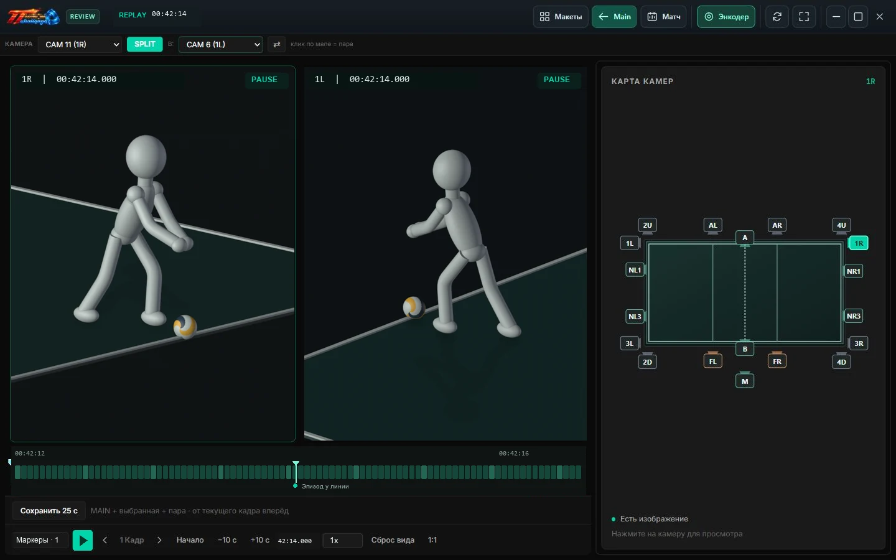

Один момент. Два ракурса.
Split размещает две камеры рядом для синхронного просмотра. Масштаб и положение изображения можно менять.
TT VISION CHALLENGE / ВИДЕОПОВТОРЫ ДЛЯ СПОРТА
Выберите камеру, сравните два ракурса и сохраните нужный момент. Работа с видео, запись матча и отдельный пульт в одной системе.

01 / ВНУТРИ ПРОГРАММЫ
Попробуйте воспроизведение, замедление и шаг по кадрам.
Один 3D-эпизод с двух ракурсов в интерфейсе программы.

Управление 3D-примером. Остальные элементы показаны для знакомства с программой.
Карта справа переключает камеру. Под изображением находятся шкала истории, переход по кадрам, скорость, маркеры и сохранение 25 секунд.
Split размещает две камеры рядом для синхронного просмотра. Масштаб и положение изображения можно менять.
Шкала времени, покадровые шаги и список маркеров помогают найти нужный момент в доступной истории.
Сохраняйте MAIN, выбранную камеру и парную камеру Split для последующего разбора.
02 / РАБОЧЕЕ МЕСТО КАЖДОГО УЧАСТНИКА
Выберите раздел, чтобы узнать,
как он используется во время матча.
РАБОЧЕЕ МЕСТО ОПЕРАТОРА
Разместите окна камер в удобном макете, наблюдайте за изображением и управляйте записью матча.
03 / ОТ ЭПИЗОДА К РЕШЕНИЮ
Инструменты для оператора.
Больше информации для судьи.
Поставьте маркер, чтобы быстро вернуться к эпизоду.
Найдите камеру, с которой нужная деталь видна яснее.
Управляйте воспроизведением и сравнивайте изображения.
Оставьте видеоматериал для последующего разбора.
TT VISION CHALLENGE / ДЛЯ ВАШЕЙ ПЛОЩАДКИ
Рассматриваете покупку системы видеоповторов?
TT Vision Challenge объединяет работу с видео,
управление матчем и вывод на экран площадки.
НАЧНИТЕ С ВАШЕЙ ЗАДАЧИ
Составьте краткое описание для обсуждения покупки.
Описание можно сохранить или скопировать.
ЕЩЁ НЕСКОЛЬКО ДЕТАЛЕЙ
TT Vision Challenge — приложение для работы с видеоповторами и управления матчем. На сайте показан реальный интерфейс с подготовленным 3D-эпизодом. Можно попробовать воспроизведение, замедление и шаг по кадрам. Работа с подключёнными камерами и запись матча выполняются в приложении.
Совместимость камер, сеть, накопители и производительность ПК проверяются для конкретной конфигурации. Количество камер, разрешение и частота кадров подбираются вместе, после проверки оборудования.
Да. Матч-контроллер предназначен для управления с отдельного устройства, а Broadcast выводит оформление матча на выбранный экран. Сеть и подключение дисплеев настраиваются для вашей площадки. Функции счёта и составов уточняются для выбранного вида спорта.
Сайт готовится к приёму обращений. Контакты для обсуждения покупки будут опубликованы здесь. Можно скачать описание своей задачи в разделе подбора системы. Сейчас сайт не принимает заявки и платежи.